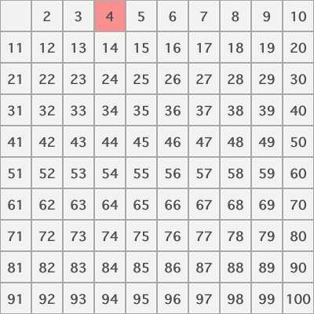

Sieve of Eratosthenes
This implementation of the classic programming challenge is built in java. I spent a lot of time coming up with the best way to optimize finding primes to the highest possible number I could. It is capable of finding all the prime numbers up to 2 billion in around 10 seconds. The part I'm those most proud of in regards to this project would be the way it manages to exclude all multiples of three automatically. This took some math to figure out exactly how to go about it, but was very satisfying when accomplished.

Wordle
A fullstack application built up on the MVC design pattern.
Database - postgresql
MVC - Java spring boot
Front End - HTML and plain Javascript
The browser stores a GUID, generated by the server, for each user so it can load previous games. However this could be easily adapted to allow for user login as this uses JWT for authentication.
All result checking is handled on the server side and passed back to the front end via a REST api.